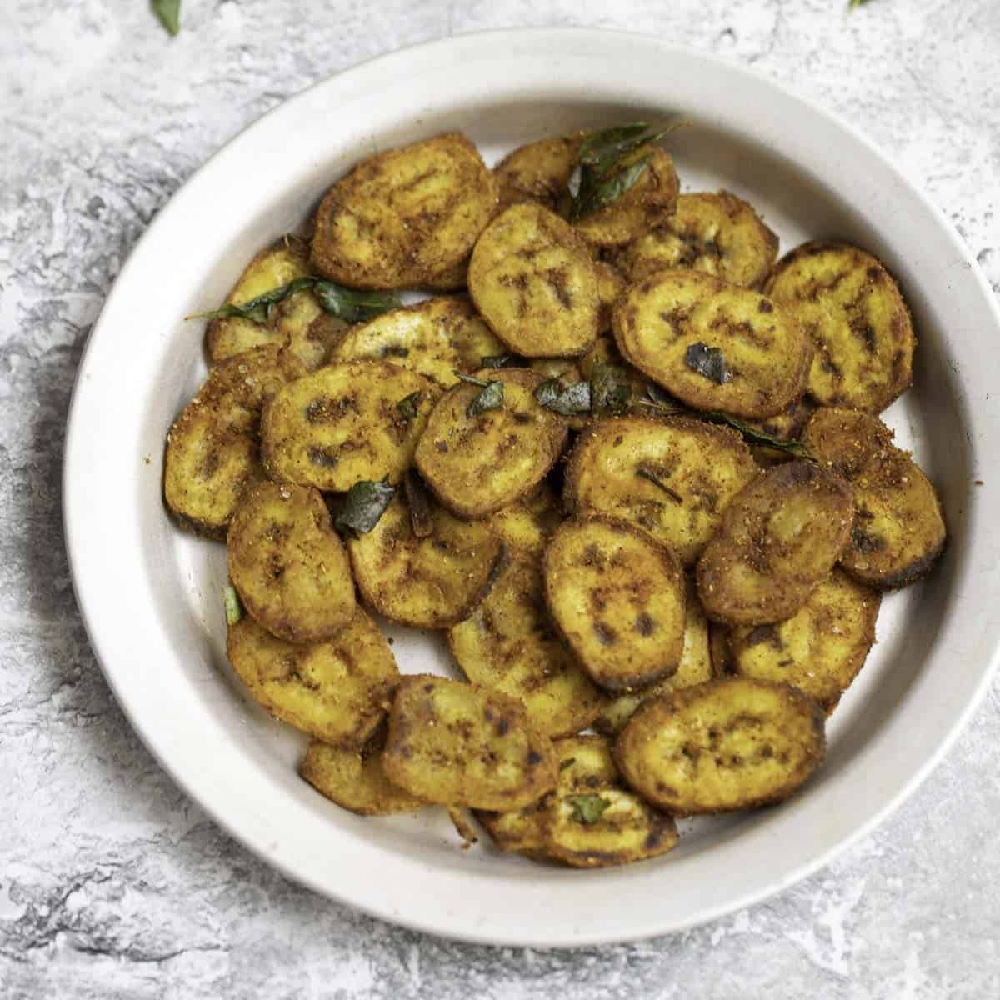

(A)
ratikaya Vepudu
Back

Aratikaya Vepudu
South Indian Raw Banana Fry
Total Calories: 200 calories
Ingredients:
2 raw bananas (aratikaya), peeled and sliced
1 teaspoon turmeric powder
1 teaspoon red chili powder
1 teaspoon coriander powder
1 teaspoon cumin seeds
1 teaspoon mustard seeds
Few curry leaves
2 tablespoons oil
Salt to taste
Fresh coriander leaves for garnish
Method:
Step 1 - Preparing the raw bananas
Peel and slice the raw bananas into thin pieces. Soak them in water to prevent discoloration.
Step 2 - Sautéing spices
Heat oil in a pan, add mustard seeds and cumin seeds. Once they splutter, add curry leaves.
Step 3 - Cooking raw bananas
Drain the banana slices and add them to the pan. Stir well and cook on a medium flame.
Step 4 - Adding spices
Sprinkle turmeric powder, red chili powder, coriander powder, and salt. Mix well and cook until the banana pieces turn crispy and golden brown.
Step 5 - Serving
Garnish with fresh coriander leaves and serve hot with rice and dal.